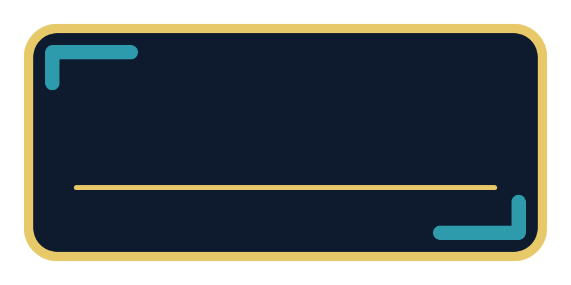
panels / 3 layers
Stat card
Add a value above the divider and its label below. Slide in the panel, then reveal the text.
T.IM ASSETS / MODULAR GRAPHICS
Build the story around your footage. Blank stat panels, directional cues and celebration pieces you can mix, layer and animate.
24 designs · pick a graphic or download the complete layered kit.
PNG files are static overlays. Animated SVGs play in compatible browsers; for video editors, animate the separate PNG layers from the ZIP with your own keyframes. Panels are blank for your own text.

Add a value above the divider and its label below. Slide in the panel, then reveal the text.
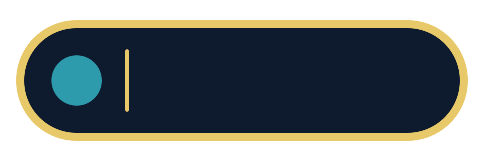
Put a metric icon on the accent disc and your value in the blank field.
Add a name or chapter title above the teal rule. Keep type inside the navy area.
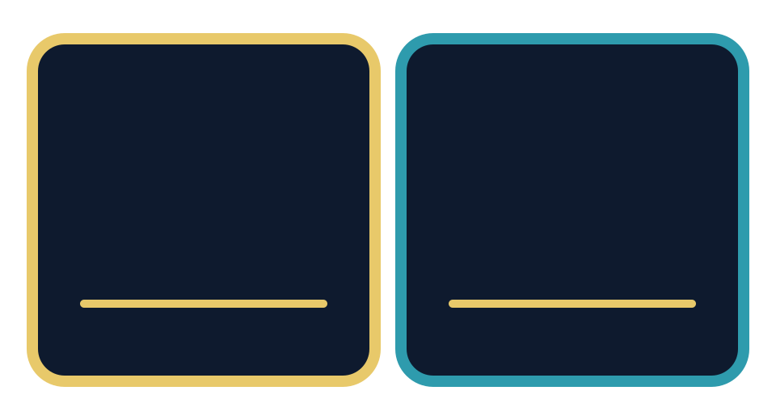
Reveal a before and after, target and actual, or two race splits independently.
Place a finish time or milestone in the empty centre. Ribbons and rings are separate.
Scale or mask the fill from its left anchor. Move the marker to match your actual progress.
Move the shaft and head together for a nudge; rotate the full group to point anywhere.
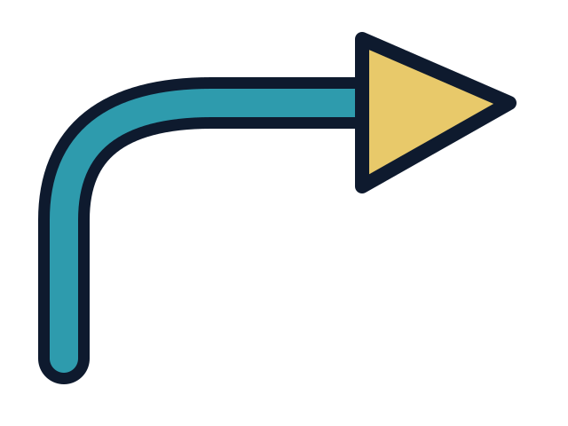
Reveal the curve before the arrowhead to guide attention toward a detail.
Stagger the three layers for forward motion, or use as a chapter transition.
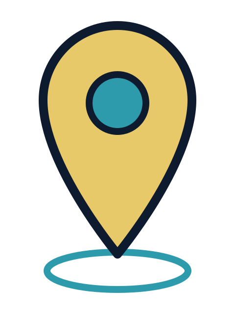
Pin and centre move together; keep the ground halo fixed and pulse its scale.
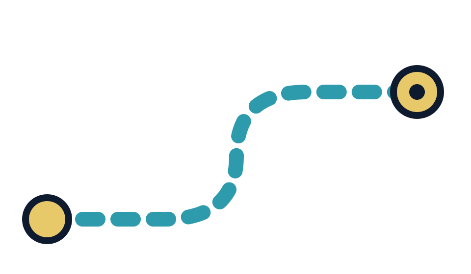
Animate the dashed route or reveal it with a mask. Endpoints stay on separate layers.
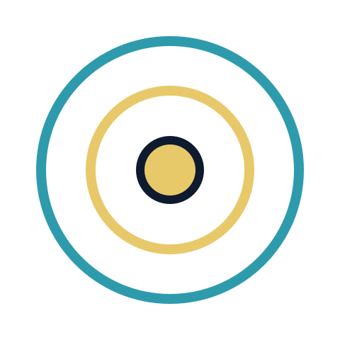
Pulse both rings around the fixed centre dot, with a short delay between them.
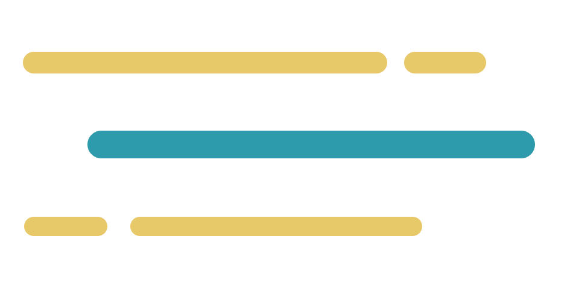
Offset and stagger the streaks behind a runner, product or moving title.
Scale the cloud from its base and fade it out after a footstep or landing.
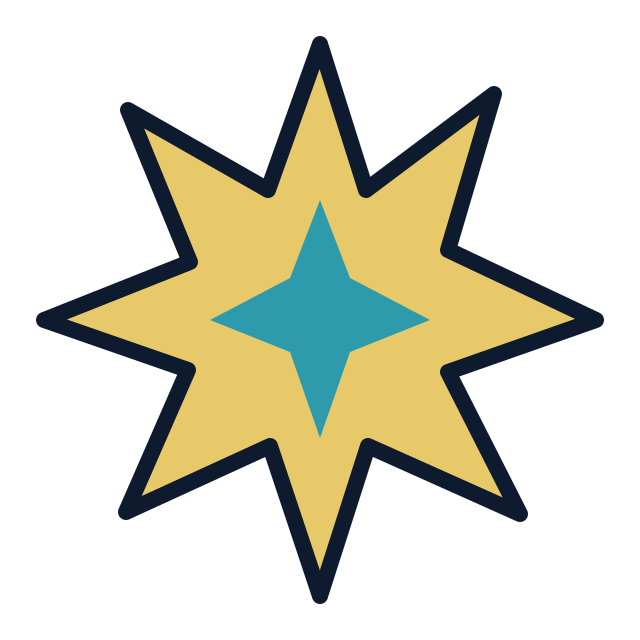
Pop the outer burst first, then rotate or scale the centre for a beat hit.
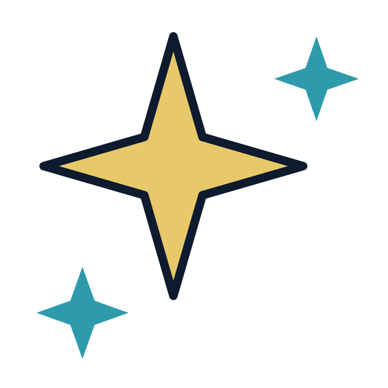
Stagger the sparkle sizes for gear highlights, achievements or a clean reveal.
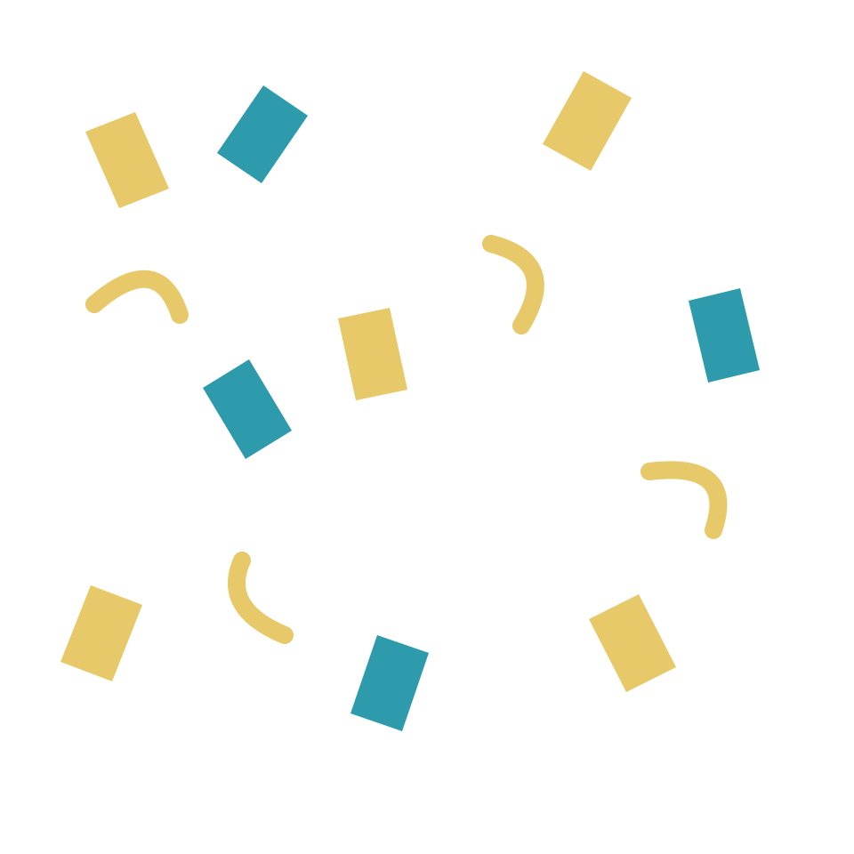
Move the colour groups at different speeds and rotate them for a celebration.
Aligned PNG layers are in the full ZIP.
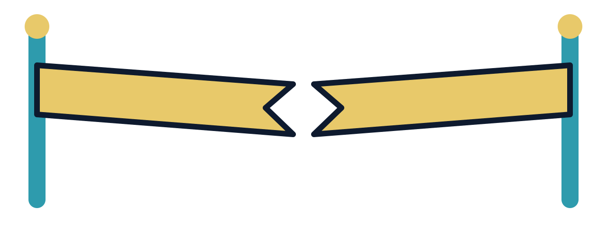
Separate the torn tape halves outward while keeping both posts fixed.
Aligned PNG layers are in the full ZIP.
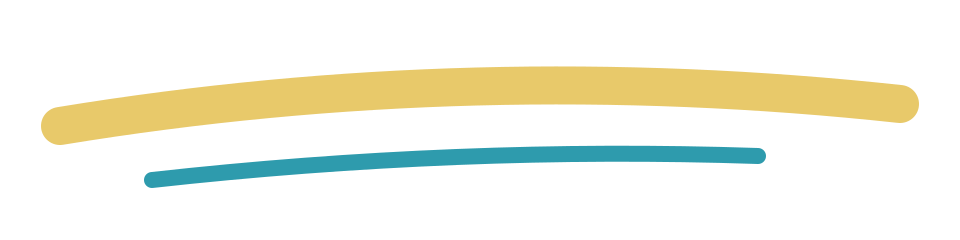
Reveal from the left beneath a title, result or product name.
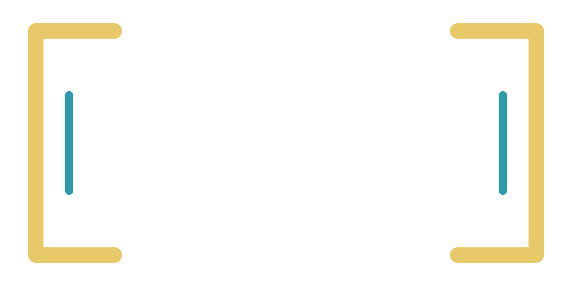
Frame footage or a metric. Move the two bracket halves inward to focus attention.
Add a short quote or training note. Keep text above the pointer tail.
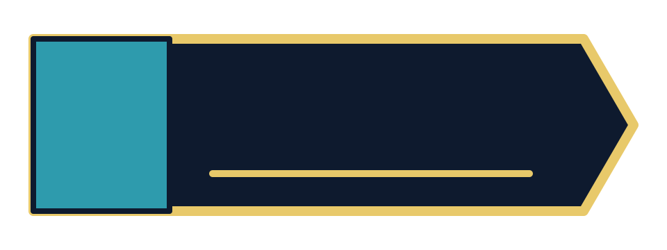
Put a chapter number in the teal block and a title in the blank navy field.
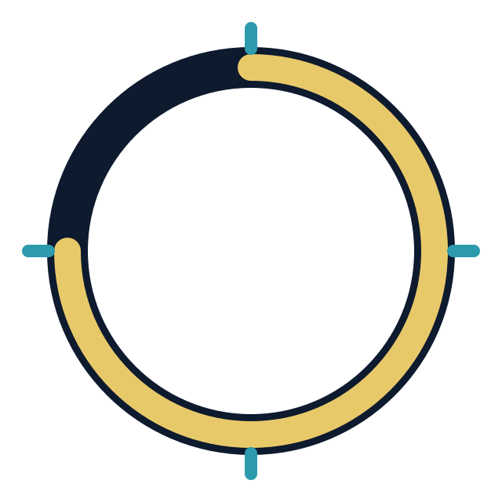
Rotate for a loading loop, or trim the progress stroke to show a real percentage.
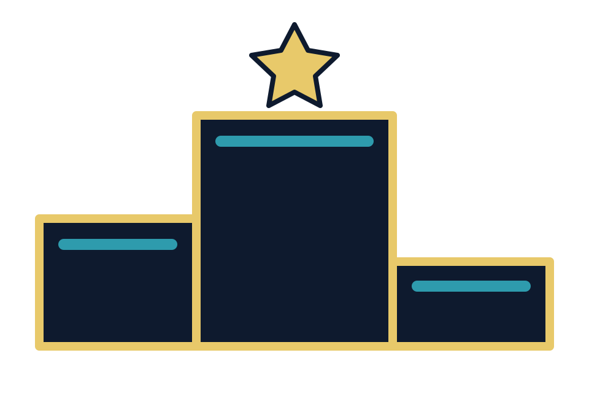
Add rankings or milestone numbers to the blank steps; pop the star after the reveal.
Each part keeps the full original canvas, so layers align when imported at the same size and centred together. Separate rings, markers, arrows and confetti groups can each have their own movement.
The ZIP includes an offline animated preview, a guide and a manifest with dimensions, pivot points and suggested motion. Animated examples show possibilities; their progress values are decorative.
Drop a PNG into CapCut, Canva or your editor. Add a time, pace or title as a separate text layer. Use the SVG version when you want to change shapes or colours.
Usage guide · Layer manifest · Animation downloads
Original T.im artwork. Reuse and adapt in personal and commercial content.